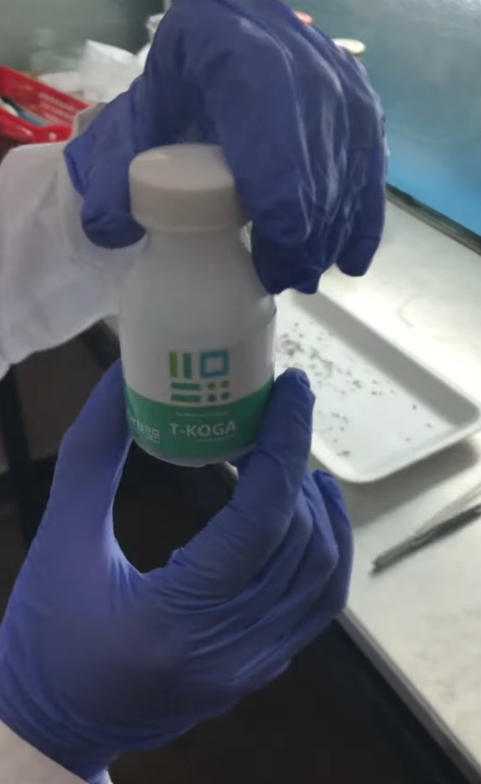
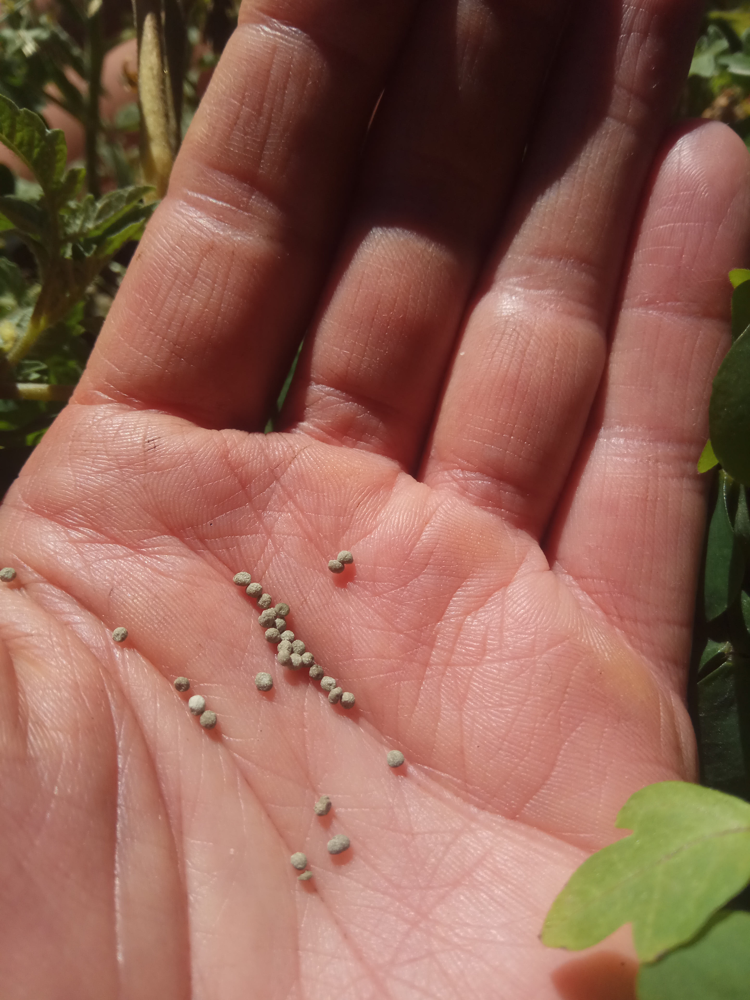
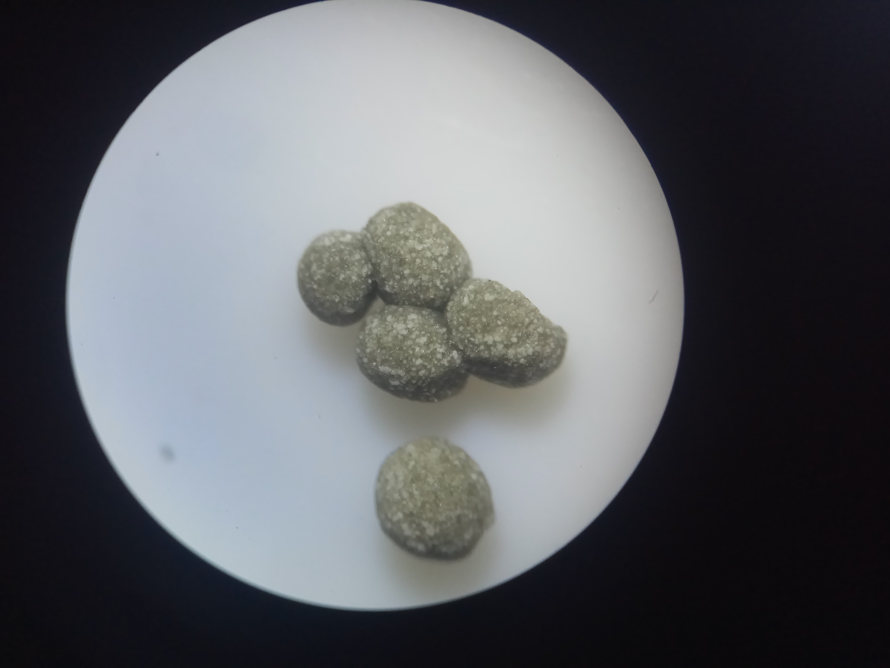
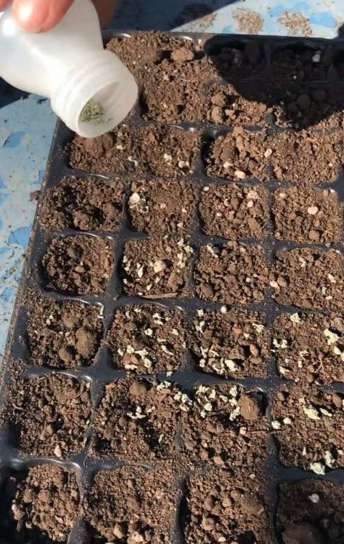

Diagnóstico de plagas, enfermedades y desarrollo de bioinsumos.
ContactarSENASA N° 60.159-BIO · Desarrollo con base académica · Ensayos experimentales
AIRU surgió en la Facultad de Agronomia de la Universidad de Buenos Aires y fue incubada por IncUBAgro. Integramos investigación científica con desarrollo aplicado en biotecnología agrícola.
Asesoramiento en manejo integrado de cultivos.
Diagnostico de enfermedades y/o patógenos.
Formulación basada en Trichoderma koningii.
Formulado sólido basado en Trichoderma koningii
T-Koga es un desarrollo biotecnológico orientado al manejo sustentable de cultivos, basado en una cepa seleccionada nativa de Trichoderma con capacidad de interacción positiva en la rizosfera.
Registro SENASA N° 60.159-BIO, desarrollado a partir de vinculacion con productores e investigación académica. Validado mediante ensayos experimentales.
Formulación sólida en pellets, de fácil incorporación y desarrollo en el sustrato o suelo. Ideal para cultivos intensivos o de alto valor, plantineras y sistemas de producción controlada.
Producción en pequeña escala. Disponible para productores especializados, cultivos de alto valor y ensayos productivos.
Consultar disponibilidad



Desarrollo científico, innovación biotecnológica y soluciones aplicadas al agro.
Conocé el origen de AIRU por UBA Emprender
Video realizado por la Secretaria de Innovación, Ciencia y Tecnologia.
Consultas comerciales y técnicas:
airuagro@gmail.com
Enviar email